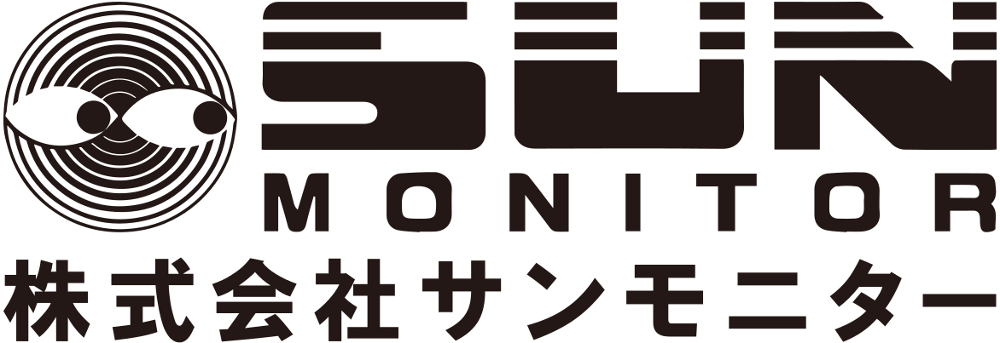
03-3931-0521 サンプルテスト・ご相談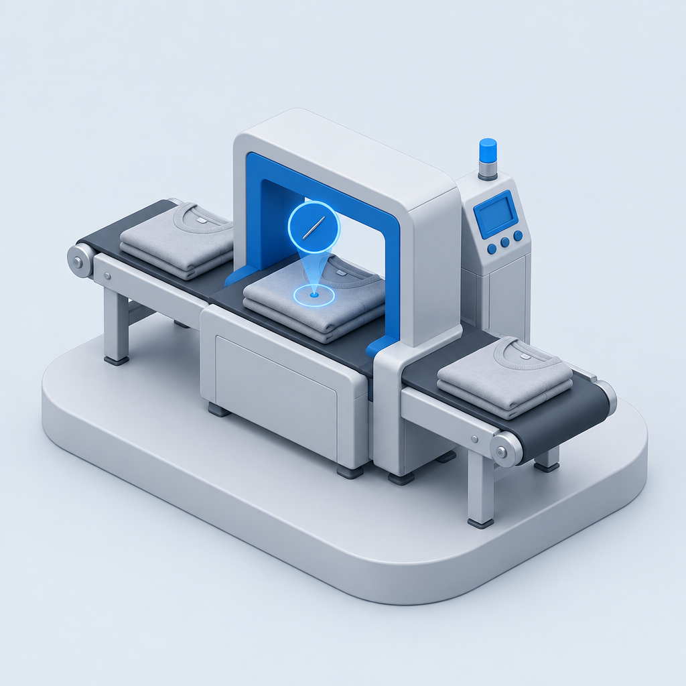
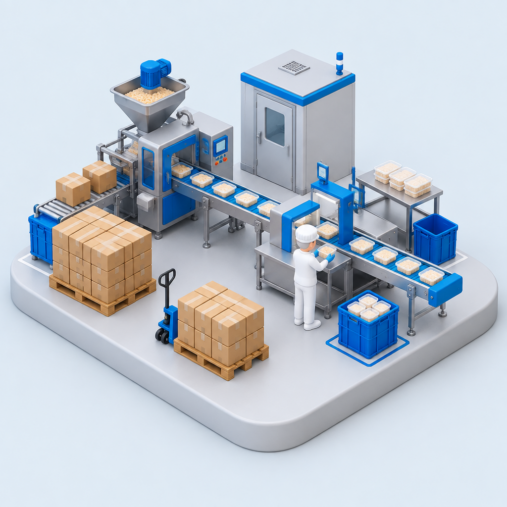
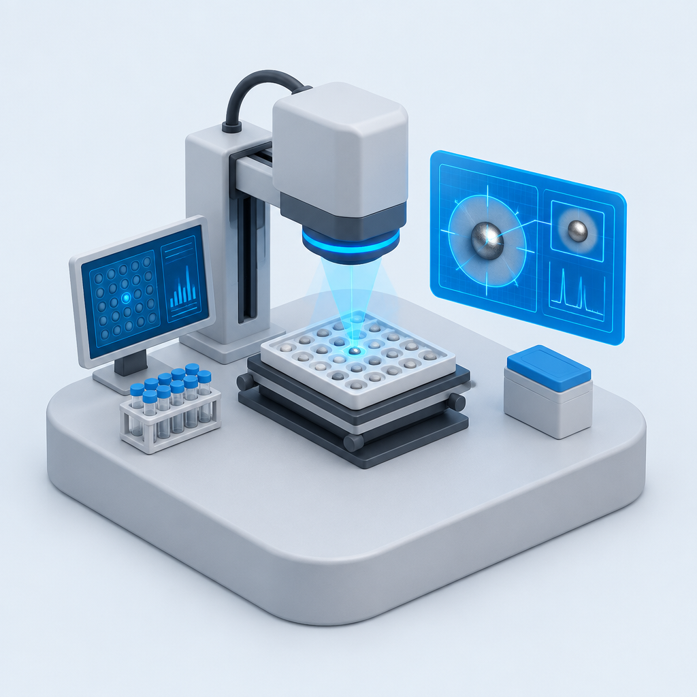
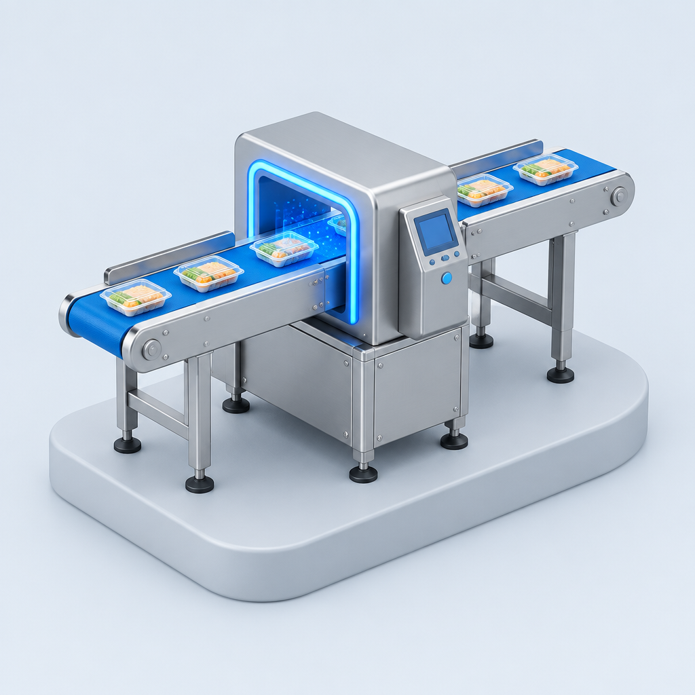
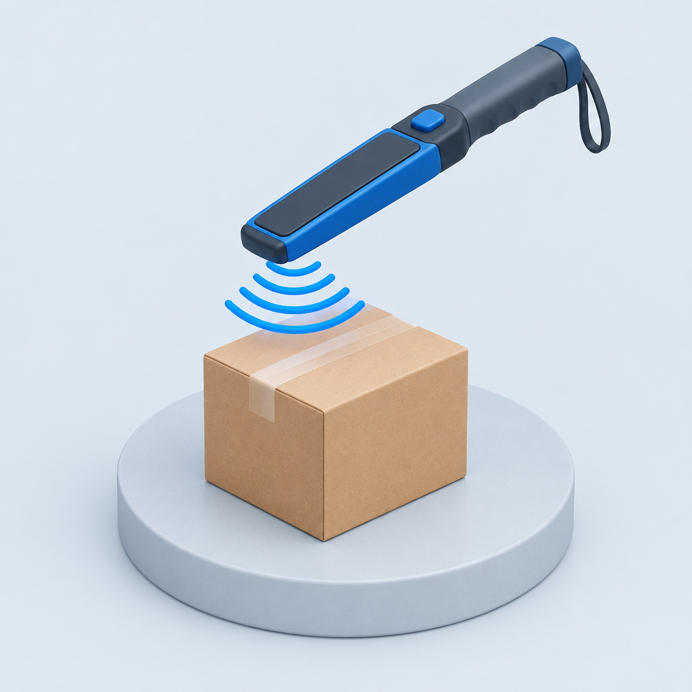
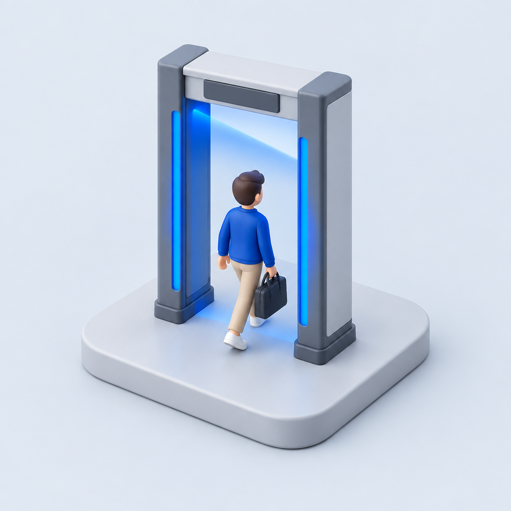
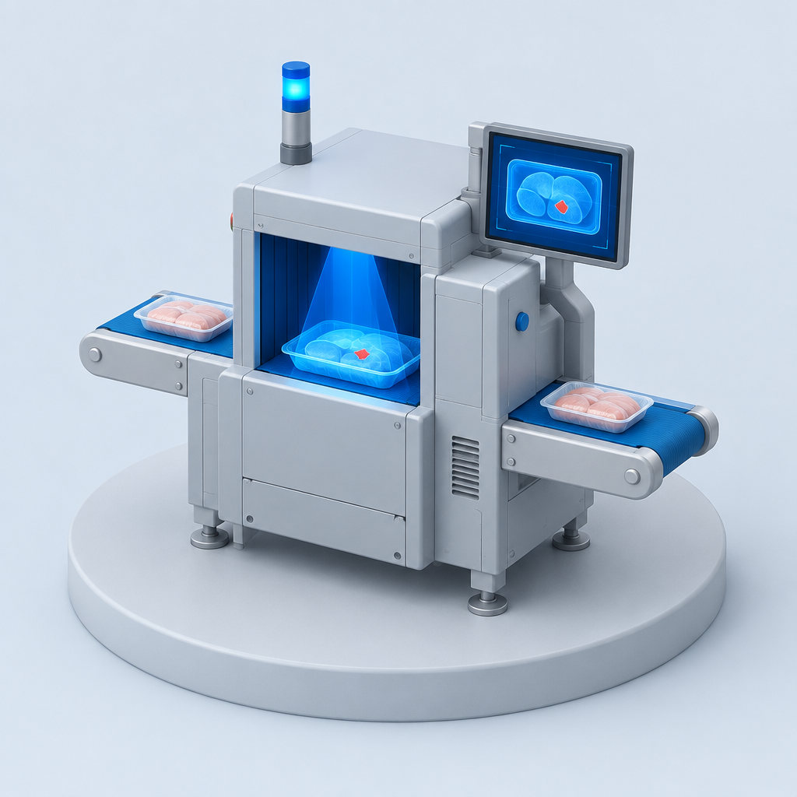
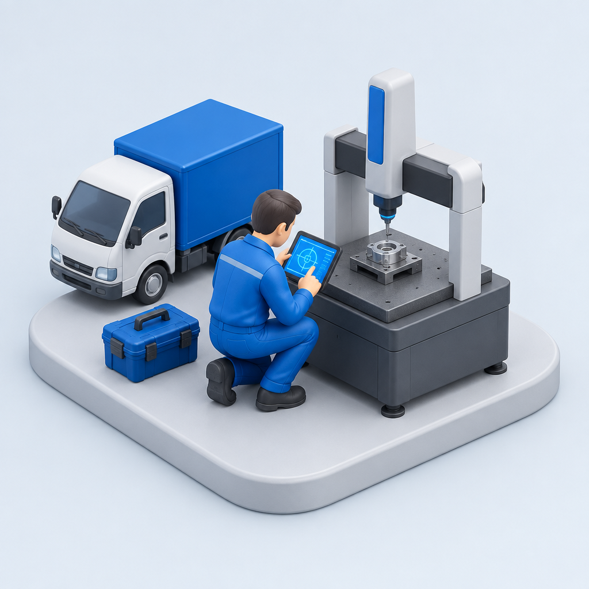
用途から探す
機種の型番が決まっていなくても構いません。「何を、どこで、どう検査したいか」からお選びいただければ、 最適な一台をご提案します。
取扱製品
レンタルを主軸に、販売・中古販売にも対応しています。
掲載機種はすべて自社で保有・整備している実機です。
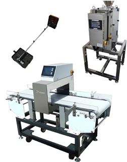
コンベア式・落下式・ハンディ型・ゲート式。鉄・非鉄の金属異物を検出します。
レンタル / 販売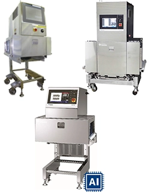
金属だけでなく、樹脂・骨・石など非金属の異物も可視化。かみこみ検査にも対応。
レンタル / 販売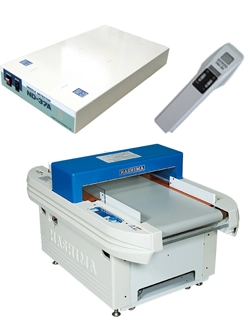
縫製品の折れ針・鉄片の検出に。アパレル・繊維製品の出荷前検査に用います。
レンタル / 販売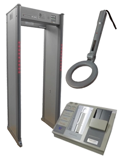
手荷物検査機、ゲート式金属探知機、ボトル内液体検査装置など入場警備向け。
レンタル / 販売選ばれる理由
検査機は、置いただけでは狙った異物を検出できません。検体・包材・ラインの速度に合わせて感度を追い込む調整が必要です。 当社は技術者が現場へ伺い、設置から設定、期間終了後の回収までを一貫して行います。
実際の検体をお預かりし、どの機種でどこまで検出できるかを検証してからレンタルをお決めいただけます。 取れるか分からないまま機械をお貸しすることはありません。
異物混入は予告なく起こります。用途や検体に合わせて選べるだけの機種を自社で保有しているため、 お問い合わせから最短翌日でお届けできる体制を取っています。
レンタルの流れ
お問い合わせから返却まで、担当者が一貫して対応します。
「何に何が入ったか」をお聞かせください。お電話でも結構です。
検体をお預かりし、検出できるかを実機で検証します。
機種と期間を確定し、お見積りをご提示します。
技術者が現地で設置・設定。使い方もその場でご説明します。
期間終了後、当社が引き取ります。延長のご相談も可能です。
検査事例
実際にお受けした検査の一部です。お客様名は伏せ、検体と使用機種のみ掲載しています。
機種が決まっていなくても構いません。検体と状況をお伺いし、検出できる機種があるかをその場でご回答します。 お急ぎの場合はお電話のほうが早くご案内できます。